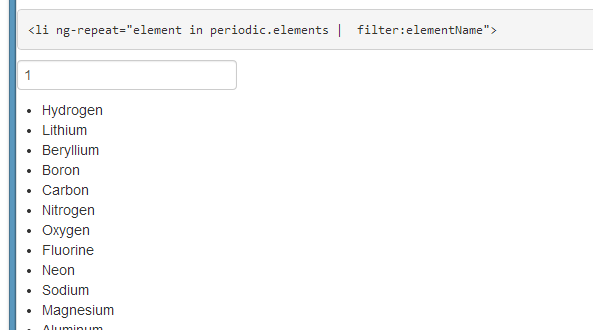

AngularJS is a Javascript MVC framework from the fine folks over at Google. The focus of Angular is building complex HTML based client applications. Its design philosophy is data first, where your data will be updating the DOM. Contrast this to a framework like JQuery where the DOM will update your data.
This is the third in a series of posts on AngularJS where we are using Chemistry data from the periodic table to help us understand the framework. The others posts are
Note: AngularJS does not allow for more than one ng-app directive. When I have multiple angular posts on the home page of my blog, only one application will work. I need to refactor the entire site to account for this. All of that to say this, you are best clicking on a single article so you can see the pages in action.
We have previously talked about AngularJS and controllers. However, an important part of web development is displaying data, especially repeating data. We are going to use our Periodic data and look at options for displaying that data on the page.
For this example, we have created a chemistry controller that contains information from the periodic table. An element in our JSON object looks like
"atomicNumber": 1,
"name": "Hydrogen",
"atomicWeight": 1.00794,
"phase": "Gas",
"ionization": 13.5984,
"melting": -259.15,
"boiling": -252.87
Our chemistry controller essentially is responsible for setting a local scope variable.
function chemCtrl($scope) {
$scope.periodic = {
elements: [
{
"atomicNumber": 1,
"name": "Hydrogen",
"atomicWeight": 1.00794,
"phase": "Gas",
"ionization": 13.5984,
"melting": -259.15,
"boiling": -252.87
},
....
]
};
}
Our application now has a JavaScript variable on our Angular scope called periodic, which holds all of our JSON chemistry data. To display this on the page, we want to take advantage of the ng-repeat directive in AngularJS. The syntax for this is pretty simple. In our example, we will display all of the chemical element names from the periodic table in an unordered list.
We start our list with a ul tag. The next step is to apply the ng-repeat directive to the markup we want to
repeat, in this case, theli tag, in which we will display the name of the element.
The syntax is ng-repeat="element in periodic.elements". Essentially, ng-repeat is expecting an expression.
In this instance, we are saying we want to loop through all items in our periodic data source, and we are going to call each
item element, which will be a single item from our JSON object. Last, we need to output the data for display.
In this instance then element's name, which is a property on our JSON object called name.
<ul>
<li data-ng-repeat="element in periodic.elements">{{element.name}} </li>
</ul>
We could also go an easily update our markup to display the atomic weight along with the name by changing our li
display to
{{element.name}} - {{element.atomicWeight}}
Resulting in a new look, where we are appending the atomic weight to the display of the element's name.
Looking at our page though, we have a lot of data that we are displaying. Angular has the concept of filters, which can be applied to our expressions. An example of this is the limitTo filter. We can limit the number of items we display, in our scenario to 10. This is as simple as
<li data-ng-repeat="element in periodic.elements|limitTo:10 ">
We now our displaying ten results on our page
Angular can also quickly allow the data to be searched using the ng-model attribute. We create a text input box,
and decorate it with the ng-model syntax
to define a variable which is available on our scope, and then use that as an input to the filter.
First, we can create the input box
<input type="text" data-ng-model="elementName"/>
Next, we use that as the parameter for our filter instead of limitTo by using the filter keyword. The syntax for this is
<li data-ng-repeat="element in periodic.elements ' filter:elementName">
We can then type in an element name and the list will narrow down automatically. Give it a try!
You will notice that this does not REALLY work. What we want to be able to do is filter the name. For example, if you type 1, you will see results appear, for example Hydrogen. The reason for this is we are filtering on the WHOLE json object, so when we type 1 we are getting Hydrogen's Atomic number of 1 as a result and Lithium's atomic weight of 6.941, etc.

What we want to be able to do is filter on the JSON object property. I bring this up, because AngularJS, of course, has the ability to do this. This is accomplished by updating our Filter expression to identify the property of the JSON object we want to filter on. For example
<li data-ng-repeat='element in periodic.elements ' filter:{name:elementNameOnly}'>
Note, there appears to be a bug in the current version of AngularJS, 1.0.8, where you need to initialize the filter. Using the current release candidate, 1.2, resolves this issue. Thanks to my Skyline Technologies colleague Berny Zamora for helping me chase that down.
Now when we type 1, we no longer see results now.
I have created an Azure Website to host all of this code at http://angularperiodic.azurewebsites.net/
The code is also available on GitHub